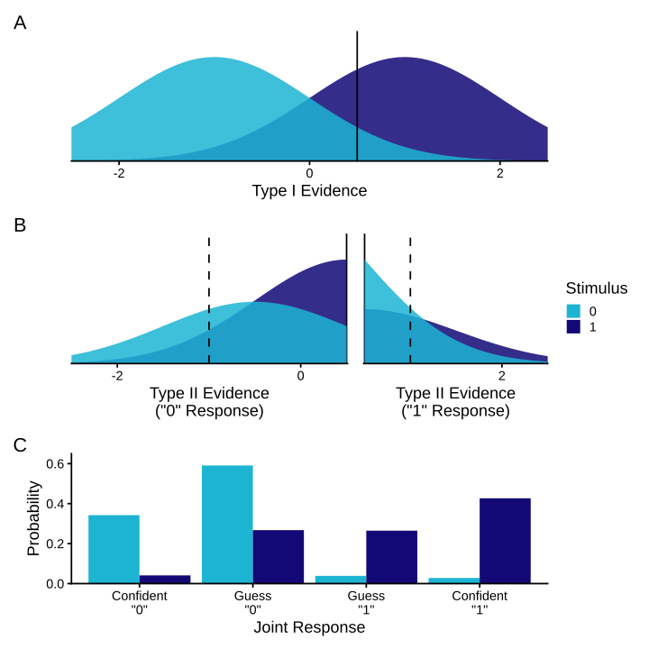
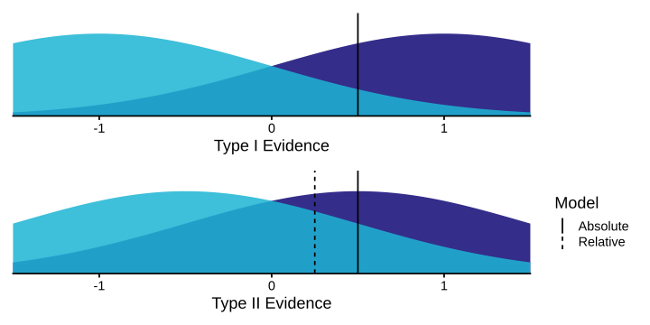
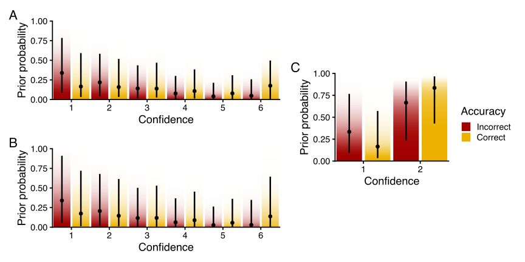
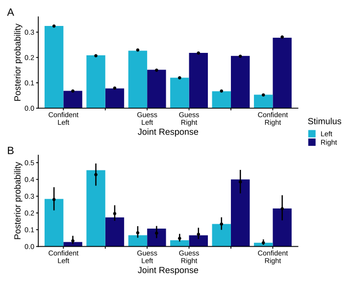
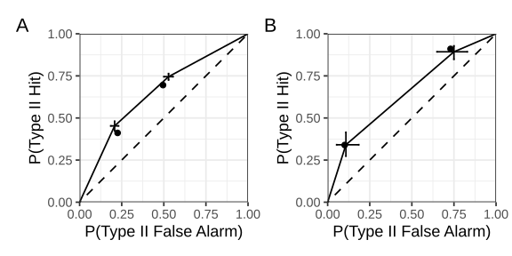
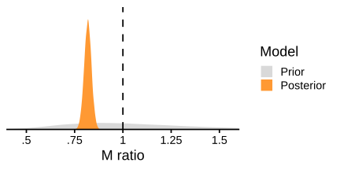
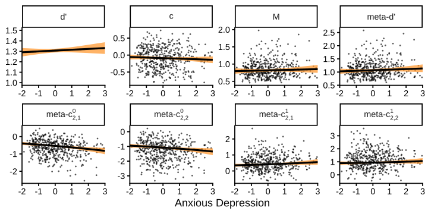
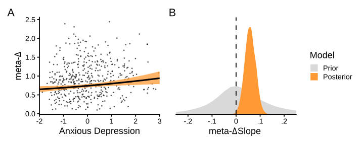
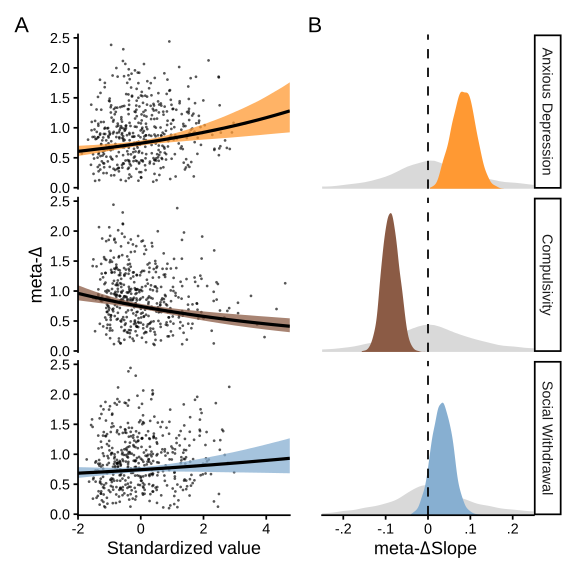

d <- read_csv("rouault_2018_exp2.csv") |>
mutate(
across(stimulus_left:confidence, as.integer),
across(c(participant, gender_female), factor)
)Quantifying metacognitive performance with the hmetad package in R
Kevin O’Neill and Stephen M. Fleming
Department of Experimental Psychology, University College London
Institute of Cognitive Neuroscience, University College London
Author Note
Kevin O’Neill  https://orcid.org/0000-0001-7401-9802
https://orcid.org/0000-0001-7401-9802
Stephen M. Fleming  https://orcid.org/0000-0003-0233-4891
https://orcid.org/0000-0003-0233-4891
Correspondence concerning this article should be addressed to Kevin O’Neill, Department of Experimental Psychology, University College London, 26 Bedford Way, London, United Kingdom, Email: kevin.o’neill@ucl.ac.uk
Abstract
A longstanding goal in metacognition research is the quantification of confidence-related performance independently from task-related performance. While there is now a proliferation of generative models of confidence in numerous psychological tasks, the meta-d' model remains a popular approach to estimating metacognitive sensitivity and metacognitive bias in the framework of Signal Detection Theory. However, as research questions in metacognition research increase in complexity, it remains an ongoing challenge to develop extensions of the meta-d' model built to deal with longitudinal, repeated-measures, or other complex experimental designs. Here we introduce the open-source R package hmetad, which allows users to easily fit the meta-d' model for a wide range of experimental designs using a familiar formula syntax. We also review how the meta-d' model can be validated in a Bayesian workflow focused on a range of posterior estimates. Overall, the hmetad package offers a comprehensive interface to fitting, evaluating, and visualizing signal detection theoretic models of metacognitive performance.
Keywords: metacognition, Bayesian statistics, multilevel modeling
Word Count: 11446
Quantifying metacognitive performance with the hmetad package in R
Understanding metacognition—the capacity to monitor and control one’s cognitive processes—is increasingly being recognized as essential to the explanation of how we form and revise beliefs, how we make flexible decisions on the basis of incomplete evidence, how we dynamically gather information, and how we interact with others (Fleming, 2024; Peters, 2024; Rahnev, 2021). But progress is strongly contingent upon the development of psychometric tools which isolate metacognitive contributions to behavior from performance-related factors. As a simple example, consider two participants (A and B) in a memory study, with participant A exhibiting a stronger correlation between memory accuracy and confidence. At first glance, this might appear to suggest that participant A has more sensitive metacognition. But if it is also found that participant A has better memory overall, then any observed difference in metacognition may simply be due to this difference in task performance (Fleming & Lau, 2014).
In response to this challenge, researchers studying metacognition have developed a wealth of models and measures that explicity aim to control for performance confounds (Rahnev, 2025). Measures typically target either metacognitive efficiency (i.e., the strength of the relationship between confidence ratings and accuracy relative to task performance) or metacognitive bias (i.e., the overall level of confidence), which are themselves potential confounds for each other. One such model—the \textrm{meta-}d' model—builds on Signal Detection Theory to estimate the participants’ sensitivity to the stimulus when making a response to the task and when rating confidence (Maniscalco & Lau, 2012, 2014). Then, comparing the two sensitivities results in a measure of metacognitive efficiency known as M-ratio (Fleming & Lau, 2014). The \textrm{meta-}d' model is currently the most widely used measure of metacognition, partly in thanks due to the implementation of hierarchical Bayesian estimation routines that provide stronger statistical power and less estimation bias than single-participant estimation (Fleming, 2017).
But there remain significant barriers to modeling metacognition. Recent evidence indicates that the separation of metacognitive factors made by the \textrm{meta-}d' model is not guaranteed, but rather subject to assumptions that often go untested (e.g., Guggenmos, 2021; Rausch et al., 2026; Xue et al., 2021). Moreover, existing implementations of the model are specific to simple experimental designs, meaning that users must develop their own software to accommodate more complex designs. Previous implementations also have limited convergence diagnostics, making it sometimes unclear whether the approximations used by fitted models are sufficient for well-calibrated inference, and lack direct interfaces with other statistical software, complicating the computation of rigorous statistical tests using model outputs. Although it has been suggested that the study of metacognition should benefit from models including trial-level predictors (e.g., neural activity or previous confidence level), trial-level models have been too cumbersome to fit in practice (Fleming, 2017). Finally, although significant attention has been paid to measures of metacognitive efficiency, less research has focused on metacognitive bias, let alone modeling both efficiency and bias in a single comprehensive framework.
Here we introduce the hmetad package, a new open source platform for hierarchical Bayesian estimation of the \textrm{meta-}d' model in the programming language R. As an extension of the more general statistical package brms, the hmetad package provides a simple formula syntax to specify arbitrary model designs, thorough model convergence diagnostics, and interfacing with other packages for model validation, statistical testing, and visualization in R. Beyond several improvements to computational efficiency, the hmetad package also computes model estimates and empirical values of a range of imputed quantities popular in metacognition research, including various response probabilities and Receiver Operating Characteristic (ROC) curves. Moreover, the hmetad package jointly models task performance, response bias, metacognitive efficiency, as well as \textrm{meta-}\Delta, a new measure of metacognitive bias (O’Neill et al., 2026), all as part of a single model.
After outlining the \textrm{meta-}d' model, we demonstrate the functionality of the hmetad package by re-analyzing an open dataset investigating associations between mental health and metacognition (Rouault et al., 2018). Rather than recommending a fixed set of defaults, we highlight how a principled Bayesian workflow recommended elsewhere in Bayesian statistics can guide modeling choices (Gelman et al., 2026; Schad et al., 2021). Overall, we argue that the hmetad package can help to address concerns in metacognition research about statistical power, reliability, and sensitivity to distributional assumptions, while at the same time opening the door to rigorously addressing a broader set of research questions.
The \textrm{meta-}d' model
In this section, we review the \textrm{meta-}d' model, focusing on its generative mechanism for confidence ratings and the unique parameterization of the model used in the hmetad package.
Data
The \textrm{meta-}d' model can be used to describe data from binary choice tasks with ordinal-valued confidence ratings (Figure 1A). That is, given a stimulus S \in \{0, 1\}, the participant is asked to make a response R \in \{0, 1\} along with a confidence rating C \in \{1, \ldots, K\} (where K is the maximum confidence rating), such that the participant’s decision is correct if R = S. For instance, participants might be asked to judge whether a stimulus is old (i.e., presented in a prior study phase) or new, determine whether a random dot motion stimulus is moving left or right, or decide which of two food items contains more calories. Along with the primary decision, participants are asked to rate their confidence in their decision on an ordinal scale indicating whether their decision was a guess, made with high confidence, or somewhere in between.1 Following Clarke et al. (1959), we refer to the primary decision as the Type I task and the task of rating confidence as the Type II task.
While it is designed for experimental paradigms with separate Type I and Type II decisions, the \textrm{meta-}d' model is also compatible with paradigms in which the participants make a single joint Type I/Type II response with endpoints representing a confident decision in either of the two Type I responses and with the center representing low confidence (J \in \{1, \ldots, 2K\}, see Figure 1B).2 This design is often preferable because it takes less time than separate responses and it reduces the likelihood that a participant changes their mind between responses. One can convert between the separate and joint responses using the equations below, implemented as the functions type1_response, type2_response, and joint_response in the hmetad package:
\begin{align*} R = \texttt{type1\_response}(J, K) &= \llbracket J > K \rrbracket \\ C = \texttt{type2\_response}(J, K) &= \begin{cases} J-K & \textrm{if } R=1 \\ K+1-J & \textrm{if } R=0 \\ \end{cases} \\ J = \texttt{joint\_response}(R, C, K) &= \begin{cases} K+C & \textrm{if } R=1 \\ K+1-C & \textrm{if } R=0 \\ \end{cases} \end{align*}
Figure 1
Two example tasks amenable to analysis with the \textrm{meta-}d' model. (A) A signal detection task with a separate Type I and Type II response. (B) A two-alternative forced-choice (2AFC) task with a combined Type I/Type I response. In both tasks, the set of responses made on the trial can be decomposed into a binary Type I response and an ordinal Type II response.

Generative model
Given the design above, the \textrm{meta-}d' model aims to explain the distribution of Type I and Type II responses. Early descriptions of the model stressed that it was not intended to be a generative model; initially, it was simply meant to describe (a) the relation between Type I responses and the stimulus, and (b) the relation between Type II responses and the accuracy of the Type I responses. However, over time this characterization has shifted to an understanding that the \textrm{meta-}d' model is sensitive to a number of generative assumptions, indicating that it is not in fact a theory-free model (Guggenmos, 2021; Rausch et al., 2026). Keeping this in mind, we next overview the statistical process underlying the \textrm{meta-}d' model Figure 2, identifying relevant assumptions along the way.
Figure 2
Generative process underlying the \textrm{meta-}d' model. (A) The observer receives an evidence signal which noisily encodes the stimulus with sensitivity d'. They make a Type I response by comparing the evidence to a response criterion c. (B) Depending on the Type I response, the observer receives a second piece of evidence about the stimulus, now with sensitivity \textrm{meta-}d'. They make a confidence rating by comparing the evidence to a set of ordered confidence criteria, \textbf{meta-}\mathbf{c_2^R}. (C) Trials are categorized depending on the stimulus and joint Type I/Type II response, where the probability of each trial type is determined by the product of area under the Type I and Type II evidence distribution curves.

Type I responses
As the \textrm{meta-}d' model is an extension of Signal Detection Theory (SDT), its model for Type I responses is simply the equal variance signal detection model (Clarke et al., 1959; Green & Swets, 1966). Given the stimulus S, equal variance SDT assumes that the observer is presented with a noisy signal x_1 \sim \mathcal{D}_S(d') following a distribution \mathcal{D} parameterized by the observer’s sensitivity to the stimulus d' Figure 2A. Although other options are available, it is common to assume that \mathcal{D} is a normal distribution with unit variance, such that: \begin{align*} \mathcal{D}_0(d') &= \mathcal{N}\left(-\frac{d'}{2}, 1\right) \\ \mathcal{D}_1(d') &= \mathcal{N}\left(+\frac{d'}{2}, 1\right) \end{align*} In the Type I task, the observer is meant to determine the underlying value of S on the basis of its noisy signal x_1. To make a response, then, it is assumed that the observer thresholds the signal x_1 to a criterion c: \begin{align*} R = \llbracket x_1 > c\rrbracket \end{align*} Rather than modeling x_1 directly, it is more efficient to marginalize over it to compute the implied probability distribution over Type I responses. Where F_{\mathcal{D}} is the cumulative distribution function of \mathcal{D}, this process entails that the observer makes Type I responses with probability: \begin{align*} P(R=r \;\vert\; S=s) = \begin{cases} 1 - F_{\mathcal{D}_{s}(d')}(c) & \textrm{if }r=1 \\ F_{\mathcal{D}_{s}(d')}(c) & \textrm{if }r=0 \end{cases} \end{align*} For example, the observer’s Type I hit rate is P(R=1 \;\vert\; S=1) = 1 - F_{\mathcal{D}_{1}(d')}(c) and their Type I false alarm rate is P(R=1 \;\vert\; S=0) = 1 - F_{\mathcal{D}_{0}(d')}(c).
Type II responses
In the Type II task, the observer is asked to determine their confidence in their Type I response. A crucial aspect of the \textrm{meta-}d' model is that it does not assume that the observer has access to the same information for the Type I and Type II tasks: it could be the case that the observer gained or lost information about the stimulus after the Type I response was made. As a result, the \textrm{meta-}d' model assumes that the observer makes Type II responses using a separate decision variable (Figure 2B) following a truncated distribution (with superscripts indicating truncation bounds): \begin{align*} x_2 \sim \begin{cases} \mathcal{D}_S^{(-\infty, \textrm{meta-}c]}(\textrm{meta-}d') & \textrm{if } R=0 \\ \mathcal{D}_S^{[\textrm{meta-}c, \infty)}(\textrm{meta-}d') & \textrm{if } R=1 \end{cases} \end{align*} This Type II decision variable has two important characteristics. First, parameters used to generate Type II responses are named with the prefix “meta-” to distinguish them from parameters used to generate the Type I responses. Second, x_2 is upper-bounded by \textrm{meta-}c when R=0 and lower-bounded by \textrm{meta-}c when R=1 so that x_2 cannot contradict the Type I response implied by x_1 (i.e., the \textrm{meta-}d' model does not allow for changes of mind between Type I and Type II responses). Then, to determine the confidence level C \in \{ 1 \ldots K\}, the observer rates confidence using a set of K-1 ordered confidence criteria, \textbf{meta-}\mathbf{c_2^R}: \begin{align*} C &= \begin{cases} 1+\Sigma_{k=1}^{K-1}[x_2 < \textrm{meta-}c_{2,k}^0] & \textrm{if } R=0 \\ 1+\Sigma_{k=1}^{K-1} [x_2 > \textrm{meta-}c_{2,k}^1] & \textrm{if } R=1 \end{cases} \end{align*} As with the Type I response, it is most efficient to marginalize over x_2 to compute the probability of a Type II response given the stimulus and Type I response: \begin{align*} P(C=c \;\vert\; S=s,R=r) &= \begin{cases} \frac{F_{\mathcal{D}_s(\textrm{meta-}d')}\left(\textrm{meta-}c\right) - F_{\mathcal{D}_s(\textrm{meta-}d')}\left(\textrm{meta-}c_{2,1}^0\right)} {F_{\mathcal{D}_s(\textrm{meta-}d')}\left(\textrm{meta-}c\right)} & \textrm{if } r=0, c=1 \\ \frac{F_{\mathcal{D}_s(\textrm{meta-}d')}\left(\textrm{meta-}c_{2,k}^0\right) - F_{\mathcal{D}_s(\textrm{meta-}d')}\left(\textrm{meta-}c_{2,k+1}^0\right)} {F_{\mathcal{D}_s(\textrm{meta-}d')}\left(\textrm{meta-}c\right)} & \textrm{if } r=0, 1 \le c \le K \\ \frac{F_{\mathcal{D}_s(\textrm{meta-}d')}\left(\textrm{meta-}c_{2,K}^0\right)} {F_{\mathcal{D}_s(\textrm{meta-}d')}\left(\textrm{meta-}c\right)} & \textrm{if } r=0, c = K \\ \frac{F_{\mathcal{D}_s(\textrm{meta-}d')}\left(\textrm{meta-}c_{2,1}^1\right) - F_{\mathcal{D}_s(\textrm{meta-}d')}\left(\textrm{meta-}c\right)} {1 - F_{\mathcal{D}_s(\textrm{meta-}d')}\left(\textrm{meta-}c\right)} & \textrm{if } r=1, c=1 \\ \frac{F_{\mathcal{D}_s(\textrm{meta-}d')}\left(\textrm{meta-}c_{2,k+1}^1\right) - F_{\mathcal{D}_s(\textrm{meta-}d')}\left(\textrm{meta-}c_{2,k}^1\right)} {1 - F_{\mathcal{D}_s(\textrm{meta-}d')}\left(\textrm{meta-}c\right)} & \textrm{if } r=1, 1 \le c \le K \\ \frac{1 - F_{\mathcal{D}_s(\textrm{meta-}d')}\left(\textrm{meta-}c_{2,K}^1\right)} {1 - F_{\mathcal{D}_s(\textrm{meta-}d')}\left(\textrm{meta-}c\right)} & \textrm{if } r=1, c = K \end{cases} \end{align*} In each of these equations, the numerator is the probability that x_2 lies between the thresholds for confidence level c, and the denominator is a normalization term to deal with the fact that x_2 is truncated above or below by \textrm{meta-}c.
Joint likelihood
The \textrm{meta-}d' model aims to explain the joint distribution of Type I and Type II responses, which can conveniently be factored into a product of the Type I and Type II response probabilities (Figure 2C): \begin{align*}
P(R=r, C=c \;\vert\; S=s) = P(R=r \;\vert\; S=s) \; P(C=c \;\vert\; S=s, R=r)
\end{align*} Note that because this distribution is conditional on the stimulus S, the \textrm{meta-}d' model does not model the base rate P(S=s). We consider two specifications of the model likelihood. When trial-level effects are of interest, one can fit the \textrm{meta-}d' model to individual trials using a categorical distribution. Where \mathcal{L} is the likelihood, \bm{\theta} = \{d', c, \textrm{meta-}d', \textrm{meta-}c, \textbf{meta-}\mathbf{c_2^0}, \textbf{meta-}\mathbf{c_2^1}\}, and \bm{s}, \bm{r}, and \bm{c} vectors of observed stimuli, Type I responses, and Type II responses: \begin{align*}
\mathcal{L}(\bm{\theta} \;\vert\; S=\bm{s},R=\bm{r},C=\bm{c}) &= \prod_{n=1}^N P(R=r_n, C=c_n \;\vert\; S=s_n)
\end{align*} However, in this formulation the number of times each conditional probability is computed is proportional to the number of trials with the same stimulus, Type I response, and Type II response. As noted by Maniscalco and Lau (2014), it is often more efficient to use a multinomial likelihood over the aggregated data instead. Where N_{s,r,c} is the number of trials with stimulus S=s, Type I response R=r, and Type II response C=c: \begin{align*}
\mathcal{L}(\bm{\theta} \;\vert\; \bm{N}) &\propto \prod_{s,r,c} P(R=r, C=c \;\vert\; S=s)^{N_{s,r,c}}
\end{align*} For numerical stability, the hmetad package evaluates the model likelihood on the logarithmic scale. For a detailed derivation of the log likelihood used in the model fitting code, see Appendix.
Fixing the Type I criterion for Type II responses
In principle, one could treat \textrm{meta-}c as a free parameter reflecting the Type I criterion of the generative model for Type II responses. But to ease comparisons between \textrm{meta-}d' and d', in addition to comparisons across participants or experiments, it is instead customary to fix \textrm{meta-}c to be similar in some respect to the Type I criterion (c). Maniscalco and Lau (2014) advocate for two options in particular (Figure 3). In the absolute model, \textrm{meta-}c is simply fixed to the Type I criterion (i.e., \textrm{meta-}c = c). This is the parameterization used in the Hmeta-d toolbox and is the default in the hmetad package (Fleming, 2017). In the relative model, \textrm{meta-}c is fixed to be equal to the Type I criterion relative to the sensitivity (i.e., \frac{\textrm{meta-}c}{\textrm{meta-}d'} = \frac{c}{d'}). This is achieved by setting \textrm{meta-}c = \frac{\textrm{meta-}d'}{d'}c. This is the parameterization used by Maniscalco and Lau (2014) and can be used in the hmetad package using the option metac_absolute=FALSE. Critically, Rausch et al. (2026) demonstrated that the choice between these two models is not arbitrary, as fitting data generated from the opposite generative model induces small but significant spurious dependencies of \textrm{meta-}d' on other model parameters.
Figure 3
Two options for fixing the Type I criterion for generating Type II responses. Under the absolute model, the Type I criterion is shared between Type I and Type II observers. Under the relative model, the Type I criterion is scaled by the M-ratio so that the observers for the Type I and Type II decisions have equal response bias proportional to their sensitivity.

Parameterization in the hmetad package
As described above, the likelihood of the \textrm{meta-}d' model is defined in terms of is parameters, \bm{\theta} = \{d', c, \textrm{meta-}d', \textrm{meta-}c, \textbf{meta-}\mathbf{c_2^0}, \textbf{meta-}\mathbf{c_2^1}\}. To enable efficient model fitting, the hmetad package uses an alternative parameterization that derives these parameters from transformed variables.
First, instead of fitting \textrm{meta-}d' directly, the hmetad package instead models the M-ratio, M = \frac{\textrm{meta-}d'}{d'}. To ensure that 0 \le M \le \infty, the M-ratio is modeled with a logarithmic link function.3 In this parameterization, one can compute \textrm{meta-}d' using the transformation \textrm{meta-}d' = Md'.
Second, in the original parameterization, the Type II criteria are ordinally constrained. Specifically, \textbf{meta-}\mathbf{c_2^0} is constrained to be decreasing and below \textrm{meta-}c, whereas \textbf{meta-}\mathbf{c_2^1} is constrained to be increasing and above \textrm{meta-}c: \textrm{meta-}c_{2,K-1}^0 \le \ldots \le \textrm{meta-}c_{2,1}^0 \le\textrm{meta-}c \le \textrm{meta-}c_{2,1}^1 \le \ldots \le \textrm{meta-}c_{2,K-1}^1 Previous implementations of the model either used constrained optimization (Maniscalco & Lau, 2014) or sorted the Type II criteria (Fleming, 2017) to meet this constraint. As a more flexible alternative, the hmetad package instead uses the positive ordered transform to model the between successive Type II criteria. Where K is the number of confidence levels, K-1 is the number of confidence criteria per response, we define \delta\textrm{meta-}c_{2,k}^0 and \delta\textrm{meta-}c_{2,k}^1 as the distances between Type II criteria for R=0 and R=1: \begin{align*}
\delta\textrm{meta-}c_{2,k}^0 = \begin{cases}
\textrm{meta-}c - \textrm{meta-}c_{2,1}^0 & \textrm{if } k = 1 \\
\textrm{meta-}c_{2,k-1}^0 - \textrm{meta-}c_{2,k}^0 & \textrm{if } 2 \le k \le K-1
\end{cases} \\
\delta\textrm{meta-}c_{2,k}^1 = \begin{cases}
\textrm{meta-}c_{2,1}^1 - \textrm{meta-}c & \textrm{if } k = 1 \\
\textrm{meta-}c_{2,k}^1 - \textrm{meta-}c_{2,k-1}^1 & \textrm{if } 2 \le k \le K-1
\end{cases}
\end{align*} Under this parameterization, the actual Type II criteria are computed using the inverse transform: \begin{align*}
\textbf{meta-}\mathbf{c_2^0} &= \textrm{meta-}c - \textrm{cumulative\_sum}\!\left(\mathbf{\delta}\textbf{meta-}\mathbf{c_2^0}\right) \\
\textbf{meta-}\mathbf{c_2^1} &= \textrm{meta-}c + \textrm{cumulative\_sum}\!\left(\mathbf{\delta}\textbf{meta-}\mathbf{c_2^1}\right)
\end{align*} As with the M-ratio, the distances \delta\textrm{meta-}c_{2,k}^0 and \delta\textrm{meta-}c_{2,k}^1 are modeled with a logarithmic link function to ensure that they are positive.
Including predictors
The primary benefit of the hmetad package is that it specifies the \textrm{meta-}d' model as a generalized linear model, allowing users to specify model parameters as a linear function of observed variables. For instance, where \bm{X_\varphi} and \beta_\varphi are the design matrix and coefficient vector for each parameter \varphi, the hmetad package uses the linear model: \begin{align*}
\log(M) &= \bm{X_M}\beta_M \\
d' &= \bm{X_{d'}}\beta_{d'} \\
c &= \bm{X_c}\beta_c \\
\log(\delta\textrm{meta-}c_{2,k}^0) &= \bm{X_{\delta\textbf{meta-}\mathbf{c_{2,k}^0}}}\beta_{\delta\textrm{meta-}c_{2,k}^0} \\
\log(\delta\textrm{meta-}c_{2,k}^1) &= \bm{X_{\delta\textbf{meta-}\mathbf{c_{2,k}^1}}}\beta_{\delta\textrm{meta-}c_{2,k}^1}
\end{align*} Importantly, the hmetad package allows for the design matrices to differ for each model parameter. As with any other brms family, it is also possible to include multilevel (or hierarchical) structure (Bürkner, 2018). Where \bm{Z_\varphi} and \gamma_\varphi are the group-level design matrix and coefficient vector for each parameter \varphi: \begin{align*}
\log(M) &= \bm{X_M}\beta_M \;+\; \bm{Z_M}\gamma_M \\
d' &= \bm{X_{d'}}\beta_{d'} \;+\; \bm{Z_{d'}}\gamma_{d'} \\
c &= \bm{X_c}\beta_c \;+\; \bm{Z_c}\gamma_c \\
\log(\delta\textrm{meta-}c_{2,k}^0) &= \bm{X_{\delta\textbf{meta-}\mathbf{c_{2,k}^0}}}\beta_{\delta\textrm{meta-}c_{2,k}^0} \;+\; \bm{Z_{\delta\textbf{meta-}\mathbf{c_{2,k}^0}}}\gamma_{\delta\textrm{meta-}c_{2,k}^0} \\
\log(\delta\textrm{meta-}c_{2,k}^1) &= \bm{X_{\delta\textbf{meta-}\mathbf{c_{2,k}^1}}}\beta_{\delta\textrm{meta-}c_{2,k}^1} \;+\; \bm{Z_{\delta\textbf{meta-}\mathbf{c_{2,k}^1}}}\gamma_{\delta\textrm{meta-}c_{2,k}^1}
\end{align*} Although a full description of all of the different kinds of predictors allowed in brms is outside the scope of this article, brms also allows for non-linear terms, monotonic predictors, autocorrelation terms, and predictors with measurement error (Bürkner, 2017, 2018; Bürkner & Charpentier, 2020).
Fitting the \textrm{meta-}d' model in R
As a practical demonstration of how to use the hmetad package to fit the \textrm{meta-}d' model in R, here we reanalyze data from Rouault et al. (2018) Experiment 2. In this experiment, 497 participants (after exclusion) completed a two-alternative forced-choice perceptual decision-making task in which they were asked to decide which of two boxes contained more dots. Participants rated their confidence in their perceptual decisions on a six-point scale from “guessing” to “certainly correct”. Participants’ performance on the perceptual task was controlled using a two-down one-up staircase on the difference in the number of dots between the two boxes. Finally, particpants completed a number of self-report psychiatric questionnaires, which were aggregated into three factors (i.e., anxious-depression, compulsive behavior and intrusive thought, and social withdrawal) using factor analysis (for more information, see Rouault et al., 2018). For simplicity, we will focus on the effects of anxious depression on metacognition, returning to the effects of the other two factors afterwards.
In their analysis, Rouault et al. (2018) correlated these three factors with independent single-participant estimates of M-ratio and mean confidence. This approach has two main drawbacks: (a) participant-level estimates of metacognitive factors are noisy and thus benefit strongly from the partial pooling present in multilevel models (Fleming, 2017; Rahnev, 2025), and (b) correlating participant-level estimates with mental health factors ignores uncertainty in participant-level estimates, as well as potential correlations in uncertainty, leading to miscalibrated statistical inferences (Singmann & Kellen, 2019). Here, we overcome these limitations by directly modeling the association of anxious depression on the parameters of the \textrm{meta-}d' model, where participant-level parameters are estimated hierarchically.
Setup
Installation
To install the latest release of the hmetad package from CRAN, one can use the command install.packages("hmetad"). Alternatively, the development version of hmetad can be installed using pak::pak("metacoglab/hmetad").
The hmetad package depends on the brms package, which in turn uses either the Rstan or cmdstanr interface to the probabilistic programming language Stan. Installing hmetad will install Rstan automatically, however it is also recommended to install the cmdstanr package, since it produces more optimized code for most applications. In either case, both interfaces requires a working C++ compiler specific to your computer’s operating system. In particular, Windows users must install RTools (https://cran.r-project.org/bin/windows/Rtools/). For detailed information on installation, please see https://mc-stan.org/install/.
Once installed, the hmetad package can be loaded using the command library(hmetad).
Data preparation
Most experimental software is designed to save trial-level tabular data, with one row for each individual trial and columns for each independent or dependent variable. The raw data provided by Rouault et al. (2018) also takes this form:
# A tibble: 103,322 × 9
participant stimulus_left response_left confidence age gender_female
<fct> <int> <int> <int> <dbl> <fct>
1 1015841 1 1 4 32 0
2 1015841 0 0 4 32 0
3 1015841 0 0 5 32 0
4 1015841 1 1 4 32 0
5 1015841 0 1 2 32 0
6 1015841 0 0 3 32 0
7 1015841 1 1 5 32 0
8 1015841 1 1 4 32 0
9 1015841 0 0 3 32 0
10 1015841 0 0 4 32 0
# ℹ 103,312 more rows
# ℹ 3 more variables: anxious_depression <dbl>, compulsivity <dbl>,
# social_withdrawal <dbl>As we can see, this is quite a large data set with 103322 observations, where participant is the participant identifier, stimulus_left indicates whether the box with more dots was on the left side, response_left indicates whether the participant reported that the left box had more dots, confidence indicates their confidence rating, age and gender_female are demographic variables, and anxious_depression, compulsivity, and social_withdrawal are the psychiatric indices generated from factor analysis (see Rouault et al., 2018 for more information).
To increase the efficiency of model fitting, the hmetad fits the \textrm{meta-}d' model on aggregated data rather than this trial-level data. In practice, the hmetad automatically generates this aggregated data set internally based on the provided model formula, so users are not required to aggregate their own data. Nevertheless, if we would like, we can manually aggregate the data using the function aggregate_metad(d, ...), where ... are grouping columns by which to aggregate. By default, this function assumes that d has a column named stimulus and either separate columns named response and confidence or a single joint_response column. Since our data has the more informative column names stimulus_left and response_left, we can indicate this using the optional arguments .stimulus and .response. For instance, we can aggregate the data separately for each participant like so:
aggregate_metad(
d, participant,
.stimulus = "stimulus_left", .response = "response_left"
)# A tibble: 497 × 4
participant N_0 N_1 N[,"N_0_1"] [,"N_0_2"] [,"N_0_3"] [,"N_0_4"]
<fct> <int> <int> <int> <int> <int> <int>
1 1015841 75 134 0 17 30 5
2 1030622 103 104 0 0 1 1
3 1103437 108 100 8 12 14 13
4 1144714 118 88 0 20 45 13
5 1149809 90 117 18 24 24 13
6 1171324 129 80 7 26 27 18
7 1202074 104 103 0 1 12 30
8 1211330 111 78 20 11 7 20
9 1218685 90 119 0 0 3 48
10 1234928 90 118 1 15 24 6
# ℹ 487 more rows
# ℹ 1 more variable: N[5:24] <int>Instead of one row per trial, this aggregated data set has only 497 rows (one row per participant). Here, the N_0 and N_1 columns represent the number of trials where stimulus_left==0 and stimulus_left==1, respectively, and the N column is a matrix containing the joint distribution of stimuli, Type I responses, and Type II responses. Its sub-columns are named with the pattern N_<stimulus>_<joint_response>, such that N_0_1 contains the number of trials with stimulus==0 and joint_response==1 (i.e., response_left==0 and confidence==6) and N_1_7 contains the number of trials with stimulus==1 and joint_response==7 (i.e., response_left==1 and confidence==1).
We are free to add any other grouping columns for data aggregation. Since we will be using anxious depression as a predictor, for example, we can include it like so:
aggregate_metad(
d, participant, anxious_depression,
.stimulus = "stimulus_left", .response = "response_left"
)# A tibble: 497 × 5
participant anxious_depression N_0 N_1 N[,"N_0_1"] [,"N_0_2"] [,"N_0_3"]
<fct> <dbl> <int> <int> <int> <int> <int>
1 1015841 -0.126 75 134 0 17 30
2 1030622 -1.31 103 104 0 0 1
3 1103437 -1.01 108 100 8 12 14
4 1144714 0.631 118 88 0 20 45
5 1149809 -0.759 90 117 18 24 24
6 1171324 0.164 129 80 7 26 27
7 1202074 1.49 104 103 0 1 12
8 1211330 -1.27 111 78 20 11 7
9 1218685 -0.308 90 119 0 0 3
10 1234928 0.802 90 118 1 15 24
# ℹ 487 more rows
# ℹ 1 more variable: N[4:24] <int>Empirical quantities.
The aggregate_metad function converts the data into a format that is useful for model fitting, but this format is rather inconvenient for other purposes like plotting and computation of response probabilities. So, the hmetad package provides several functions to compute data-driven measures relevant to metacognition researchers, all of which share the same basic interface as aggregate_metad. To compute the Type II response probabilities per participant, for instance, we can use the function type2_probabilities:
type2_probabilities(
d, participant, anxious_depression,
.stimulus = "stimulus_left", .response = "response_left"
)# A tibble: 11,928 × 8
# Groups: participant, anxious_depression, stimulus_left, response_left
# [1,988]
participant anxious_depression stimulus_left response_left confidence
<fct> <dbl> <int> <int> <int>
1 1015841 -0.126 0 0 1
2 1015841 -0.126 0 0 2
3 1015841 -0.126 0 0 3
4 1015841 -0.126 0 0 4
5 1015841 -0.126 0 0 5
6 1015841 -0.126 0 0 6
7 1015841 -0.126 0 1 1
8 1015841 -0.126 0 1 2
9 1015841 -0.126 0 1 3
10 1015841 -0.126 0 1 4
# ℹ 11,918 more rows
# ℹ 3 more variables: joint_response <int>, n <int>, p <dbl>We can compute the area under the Type II ROC (AUROC2) similarly:
auroc2(
d, participant, anxious_depression,
.stimulus = "stimulus_left", .response = "response_left"
)# A tibble: 994 × 4
# Groups: participant, anxious_depression [497]
participant anxious_depression response_left auroc2
<fct> <dbl> <int> <dbl>
1 1015841 -0.126 0 0.630
2 1015841 -0.126 1 0.712
3 1030622 -1.31 0 0.568
4 1030622 -1.31 1 0.610
5 1103437 -1.01 0 0.671
6 1103437 -1.01 1 0.861
7 1144714 0.631 0 0.629
8 1144714 0.631 1 0.609
9 1149809 -0.759 0 0.762
10 1149809 -0.759 1 0.593
# ℹ 984 more rowsAs we demonstrate below, each of these functions has another corresponding function for extracting model estimates of the same quantities to facilitate comparison between the data and model predictions.
Model specification
Given a data set, the next step is to specify a model that properly accounts for the nested structure of the data. Here we focus on specifying a model for the data collected by Rouault et al. (2018) as an example. A full characterization of available model designs is outside the scope of this article, however we refer readers to (Bürkner, 2018; Singmann & Kellen, 2019) for more information.
As can be seen from the aggregated data, Rouault et al. (2018) used a mixed design with repeated trials per participant, but with anxious depression as a between-participant predictor. To account for this structure, we will want a model that hierarchically estimates separate parameters for each participant with population-level effects of anxious depression (Barr, 2013). In the hmetad package, we can specify this structure as an R formula as used in the lme4 and brms packages.
First, to verify which parameters our model contains, it is helpful to view the distribution family for our data:
metad(n_distinct(d$confidence))Custom family: metad__6__normal__absolute__multinomial
Link function: log
Parameters: mu, dprime, c, metac2zero1diff, metac2zero2diff,
metac2zero3diff, metac2zero4diff, metac2zero5diff, metac2one1diff,
metac2one2diff, metac2one3diff, metac2one4diff, metac2one5diffThis output tells us a few key pieces of information. Looking at the name of the model family, we see that our model has 6 confidence levels and uses the normal distribution for the signal detection model, the absolute variant of the \textrm{meta-}d' model, and the multinomial likelihood (over aggregated data). This output also lists the model parameters over which we can specify brms formulas. The primary model parameter is the M-ratio, which for technical reasons, brms requires to be called mu. As the model uses the log link function, M-ratio is estimated on the logarithmic scale to prevent negative estimates of M-ratio4. dprime and c are the Type I sensitivity and response criterion estimated on the identity scale. Finally, we have a long list of parameters which define the Type II criteria. These parameters are named using the syntax metac2<response><confidence>diff, where <response> is the Type I response (either zero or one) and <confidence> is any integer from 1 to 5 (one less than the total number of confidence levels).
Now that we know the names of all of the parameters for our model, we can specify a model formula for each parameter using the function bf from the brms package:
formula <- bf(
N ~ anxious_depression + (1 | participant),
dprime ~ anxious_depression + (1 | participant),
c ~ anxious_depression + (1 | participant),
metac2zero1diff ~ anxious_depression + (1 | p | participant),
metac2zero2diff ~ anxious_depression + (1 | p | participant),
metac2zero3diff ~ anxious_depression + (1 | p | participant),
metac2zero4diff ~ anxious_depression + (1 | p | participant),
metac2zero5diff ~ anxious_depression + (1 | p | participant),
metac2one1diff ~ anxious_depression + (1 | p | participant),
metac2one2diff ~ anxious_depression + (1 | p | participant),
metac2one3diff ~ anxious_depression + (1 | p | participant),
metac2one4diff ~ anxious_depression + (1 | p | participant),
metac2one5diff ~ anxious_depression + (1 | p | participant)
)This formula has a few notable features. First, to specify the formula for M-ratio, we use the response variable N (which is the name of the column of aggregated responses from aggregate_metad). Second, for each parameter we include anxious_depression as a between-participant predictor in the model. Third, we include hierarchical estimates of all coefficients for each participant with the syntax (1 | participant) and (1 |p| participant). This syntax results in random intercepts for each participant, meaning that this model will capture participant-level deviations from model estimates.5 Here, we use (1 |p| participant) for the confidence criteria to additionally model participant-level correlations (since it is expected that participants with one confidence criterion set high will likely have others set high as well). As we are using the same design for all model parameters, the formula above has a lot of repeated code. To make the code more readable, then, we can specify formulas for multiple model parameters at the same time (except for M-ratio, which requires its own formula):
formula <- bf(
N ~ anxious_depression + (1 | participant),
dprime + c ~ anxious_depression + (1 | participant),
metac2zero1diff + metac2zero2diff + metac2zero3diff +
metac2zero4diff + metac2zero5diff +
metac2one1diff + metac2one2diff + metac2one3diff +
metac2one4diff + metac2one5diff ~
anxious_depression + (1 | p | participant)
)Prior elicitation
Before fitting the \textrm{meta-}d' model, it is necessary to specify priors over model parameters using multiple calls to the set_prior function (or one of its variants) from the brms package. Generally, prior specification will depend on a mixture of domain expertise about the model, the data being modeled, and the population being studied. Because prior specification is a somewhat subjective process, we recommend the use of prior predictive checks as a standard part of the Bayesian workflow (Gelman et al., 2026; Schad et al., 2021). Here we chose to use normal priors over the model coefficients, half-normal priors for the between-participant standard deviations, and LKJ priors for between-participant correlations:
prior <- set_prior("normal(0, .33)", class = "Intercept") +
set_prior("normal(1.11, .1)", class = "Intercept", dpar = "dprime") +
set_prior("normal(0, .1)", class = "Intercept", dpar = "c") +
set_prior("normal(-1.33, 1)", class = "Intercept", dpar = metac2_parameters(K = 6)) +
set_prior("normal(0, 0.25)", class = "b") +
set_prior("normal(0, 0.25)", class = "b", dpar = c("dprime", "c")) +
set_prior("normal(0, 0.25)", class = "b", dpar = metac2_parameters(K = 6)) +
set_prior("normal(0, 0.5)", class = "sd") +
set_prior("normal(0, 0.33)", class = "sd", dpar = c("dprime", "c")) +
set_prior("normal(0, 1)", class = "sd", dpar = metac2_parameters(K = 6)) +
set_prior("lkj(2)", class = "cor")Because we are modeling each parameter hierarchically, each parameter has a separate prior for its population-level intercepts (with the argument class = "Intercept"), population-level coefficients (with the argument class = "b") and for the standard deviation of between-participant differences (with the argument class = "sd"). These priors have been selected to match our expectations for the particular design used by Rouault et al. (2018). In particular, for perceptual tasks we generally expect mean M-ratio to lie somewhere between 0.5 and 2.0, with participant-level M-ratios having slightly more variance. Next, because this experiment (a) used a two-alternative forced-choice design to reduce response biases and (b) included a two-down one-up staircase to fix task performance to \sim\! 71\% for all participants, we have a strong expectation that c \approx 0 and hence that d' \approx -2\Phi^{-1}(1 - .71) \approx 1.11. To account for this, we set reasonably informative priors over both parameters, as well as priors over the between-participant standard deviations that encourage small differences in first order performance between participants.
The priors for the confidence criteria are the most difficult to set, because they are on an unintuitive scale (i.e., log distances between successive criteria) and because the optimal criterion setting will depend on the number of confidence levels available to the participant (among other factors, see Maniscalco et al., 2025). So, to check the implications of this prior distribution, we can fit a prior-only model by calling the function fit_metad with the argument sample_prior = "only":
m.prior <- fit_metad(
formula, d,
.stimulus = "stimulus_left", .response = "response_left",
file = "_models/prior.rds", prior = prior, sample_prior = "only",
cores = 4, init = 0
)Here we have chosen to save our prior model into a file called prior.rds, to run Stan in parallel across four cores, and to initialize all parameters to zero. Like any other brms object, we can view helpful summaries of our model using the summary and plot functions. Since this model has a large number of parameters, however, it is easier to check the implications of this prior distribution by plotting out distributions of model parameters and other implied quantities.
The hmetad package has a range of functions for extracting such model quantities, all of which contain either _draws or _rvars following conventions from the tidybayes package. Each of these functions takes as input a brms model and a new dataset from which to compute predictions. To check our priors for the group-level parameters, we can first display the prior distributions of model parameters using the function linpred_rvars_metad over a sample dataset where anxious depression is set to zero (i.e., its mean value) and tidybayes::median_qi to display prior medians and 95% credible intervals:
newdata <- tibble(anxious_depression = 0)
linpred_rvars_metad(m.prior, newdata, re_formula = NA, pivot_longer = TRUE) |>
median_qi(.value)# A tibble: 15 × 9
anxious_depression .row .variable .value .lower .upper .width .point
<dbl> <int> <chr> <dbl> <dbl> <dbl> <dbl> <chr>
1 0 1 M 1.00 0.529 1.92 0.95 median
2 0 1 dprime 1.11 0.904 1.31 0.95 median
3 0 1 c 0.0000512 -0.195 0.200 0.95 median
4 0 1 meta_dprime 1.11 0.568 2.19 0.95 median
5 0 1 meta_c 0.0000512 -0.195 0.200 0.95 median
6 0 1 meta_c2_0_1 -0.289 -2.03 0.0576 0.95 median
7 0 1 meta_c2_0_2 -0.661 -3.11 -0.0864 0.95 median
8 0 1 meta_c2_0_3 -1.08 -3.91 -0.267 0.95 median
9 0 1 meta_c2_0_4 -1.48 -4.54 -0.448 0.95 median
10 0 1 meta_c2_0_5 -1.92 -5.33 -0.668 0.95 median
11 0 1 meta_c2_1_1 0.285 -0.0540 1.89 0.95 median
12 0 1 meta_c2_1_2 0.642 0.103 2.78 0.95 median
13 0 1 meta_c2_1_3 1.06 0.275 3.61 0.95 median
14 0 1 meta_c2_1_4 1.46 0.472 4.26 0.95 median
15 0 1 meta_c2_1_5 1.88 0.683 5.23 0.95 median
# ℹ 1 more variable: .interval <chr>Just by looking at the prior summary, we can see that this prior places reasonable bounds for mean M-ratio, d', and c. We can also see that our priors for the mean Type II criteria are ordered appropriately with a moderate degree of uncertainty. Note that, in this code, participant-level differences are ignored by setting re_formula = NA (otherwise, newdata must contain a column called participant containing the ID of the participant being simulated).
As a further check, we can compute the implied Type II response probabilities using the analogous function type2_rvars(m.prior, newdata, re_formula = NA, by_correct = TRUE) (see Figure 4A). From this figure, it is clear that our priors put roughly equal probability on each response for each possible stimulus with a slight preference for accurate but low confidence responses, which is a reasonable start. Critically, it is necessary to tune the prior for the Type II criteria through iterative refinement and visualization, because models with different number of confidence criteria require different parameter values to produce roughly uniform confidence responding. As an example, if we use the same prior for a hypothetical dataset with only two confidence levels, the resulting prior predictions strongly favor high-confidence responding (Figure 4B). In this scenario, it would be sensible to increase the prior mean of the confidence criteria until the prior predictions more closely resembled our expectations.
Figure 4
Prior predictions of Type II response probabilities. (A) Group-level prior predictions with anxious depression at the mean. Prior predictions are mostly uniform, with a slight preference for low-confidence incorrect responses and high-confidence correct responses. (B) Participant-level prior predictions for an example participant. (C) Group-level prior predictions using the same prior as in (A), only for a dataset with two confidence levels. Unlike in (A), this prior favors high confidence ratings and should likely be adjusted before use.

Note. Points and intervals indicate prior medians and 95% credible intervals. Smoothed bars depict complementary cumulative distribution function of prior distributions.
Next, to visualize priors for participant-level standard deviations, it suffices to simulate just a single participant (since all participants are equivalent a priori):
newdata |>
mutate(participant = first(d$participant)) |>
add_linpred_rvars_metad(m.prior, pivot_longer = TRUE) |>
median_qi(.value)# A tibble: 15 × 10
anxious_depression participant .row .variable .value .lower .upper
<dbl> <fct> <int> <chr> <dbl> <dbl> <dbl>
1 0 1015841 1 M 0.995 0.309 3.29
2 0 1015841 1 dprime 1.11 0.419 1.84
3 0 1015841 1 c -0.00194 -0.674 0.744
4 0 1015841 1 meta_dprime 1.10 0.200 3.93
5 0 1015841 1 meta_c -0.00194 -0.674 0.744
6 0 1015841 1 meta_c2_0_1 -0.326 -4.35 0.497
7 0 1015841 1 meta_c2_0_2 -0.755 -8.43 0.206
8 0 1015841 1 meta_c2_0_3 -1.25 -11.8 -0.00590
9 0 1015841 1 meta_c2_0_4 -1.79 -16.7 -0.243
10 0 1015841 1 meta_c2_0_5 -2.34 -20.1 -0.467
11 0 1015841 1 meta_c2_1_1 0.333 -0.452 4.05
12 0 1015841 1 meta_c2_1_2 0.768 -0.225 7.37
13 0 1015841 1 meta_c2_1_3 1.27 0.00714 11.0
14 0 1015841 1 meta_c2_1_4 1.80 0.250 16.6
15 0 1015841 1 meta_c2_1_5 2.35 0.460 19.0
# ℹ 3 more variables: .width <dbl>, .point <chr>, .interval <chr>The resulting probabilities are plotted in Figure 4C. Note that participant-level priors will always be centered around the population means, only with greater uncertainty. Just as with the population-level parameters, we can use visualizations like this to iteratively elicit prior distributions that reflect our beliefs about reasonable differences between participants. For instance, we can increasing the participant-level standard deviations to allow a wider range of behaviors, or alternatively decrease the participant-level standard deviations to encourage stronger similarity between participants. This strategy is also useful for setting priors for model coefficients, for example to visualize differences in prior distributions at different levels of anxious depression.
We end this section by highlighting two key points. First, there can be reasonable disagreement about the “best” prior to use in any given situation; as a result, one’s choice of prior need only be scientifically justifiable in the context of one’s particular study (McElreath et al., 2016). Moreover, so long as the prior is not exceedingly informative, its influence on the resulting posterior should be small (Kruschke & Liddell, 2018). Second, prior revision should always occur before looking at the data, since refining a prior after observing the data is a form of double-dipping tantamount to Bayesian p-hacking. Incorporating thorough prior predictive checks into a standard workflow can help prevent such practices by ensuring that one’s model is validated before fitting it to data (Gelman et al., 2026).
Model fitting
Now that we have verified that our prior model is sufficient, we can fit the model to our data by calling the update function on our prior model with the argument sample_prior = "no" (alternatively, we could call fit_metad function again, except this time removing the argument sample_prior = "only"). Note that the time it takes to fit a model is mostly dependent on the number of rows in the aggregated dataset (i.e., participants and within-participant conditions), not the number of trials. Most simple models should be able to fit within a few minutes, however models with many predictors or models fit to large datasets such as this one may take over an hour. In such cases, we recommend using a smaller subset of the data during model development.
m <- update(m.prior, file = "_models/fit.rds", sample_prior = "no", cores = 4)Like any brms model, we can obtain numerical and graphical summaries of the posterior distribution using summary(m) and plot(m). Before inspecting the fitted model, however, it is necessary to ensure that the model has converged properly.
Model convergence
There are a number of possible warning messages that one might encounter during model fitting. Some warnings, such as warnings about effective sample size, do not indicate serious problems with the model itself and can usually be resolved with minor adjustments (e.g., running the model for a larger number of iterations). But most of the diagnostics checked by Stan do indicate problems with the model that must be resolved before interpreting the resulting posterior. Here we will focus on one common issue resulting from hierarchical models: divergent transitions. For a detailed guide on resolving other model fitting issues, we recommend the Stan guide on convergence warnings.
In this case, R outputs the following warnings:
Parts of the model have not converged (some Rhats are > 1.05). Be careful when
analysing the results! We recommend running more iterations and/or setting
stronger priors.
There were 4000 divergent transitions after warmup.
Increasing adapt_delta above 0.8 may help. See
http://mc-stan.org/misc/warnings.html#divergent-transitions-after-warmupWhen brms outputs warnings that Stan has encountered divergent transitions, this is an indicator that the model’s posterior distribution has not been fully explored, meaning that the posterior samples under-represent the true posterior (Betancourt, 2017).6 If there are only a small number of divergent transitions, it may be sufficient to adjust Stan’s settings to enable more fine-grained sampling using the argument control = list(adapt_delta = <adapt_delta>) (indeed, this is the default recommendation accompanied by warnings about divergent transitions). However, this approach will significantly slow down model fitting and is not guaranteed to resolve the issue.
The first potential solution to this problem is to set more informative priors to help bound difficult posterior geometries (Betancourt, 2017). By default, brms uses Student-t priors over intercepts and participant-level standard deviations and uninformative (i.e., flat) priors over all other parameters. Such uninformative priors not only are unlikely to represent one’s beliefs about the model parameters, but they also put substantial probability mass over implausible values (e.g., a flat prior over M-ratio makes the values M = 1 and M = 100000 equally likely). To verify that priors have been set properly, it is helpful to check the output of prior_summary(m). However, above we have chosen moderately informative priors based on knowledge about the experimental design. These constraints already help jointly identify the model parameters, so in this case constraining the prior further is unlikely to resolve convergence issues.
Another potential solution is to investigate which parameters exhibit problematic posterior geometry and eliminate them from the model (Gabry et al., 2019). In the context of the \textrm{meta-}d' model, a common source of such problems is that parameters are poorly identified when participants exhibit aberrant behavior. For instance, if a participant only responds “present” (or, “right”), it is impossible to estimate confidence criteria for the opposite response. As another example, it is difficult to estimate M-ratio when a participant has chance-level task performance (i.e., d'=0), because dividing by zero creates infinite values of M-ratio. In our case, however, the divergent transitions are likely due to extreme confidence responding: there are many participants in our data that only use one or two (of six) confidence levels, leaving many cells with zero counts in the aggregated data. Such issues are somewhat mitigated in a multilevel model such as the one we present here, since participant-level estimates are informed by the group-level means. However, if there are enough empty cells, or if the group-level estimates themselves are under-powered, participant-level estimates of the confidence thresholds may still be poorly identified or exhibit degenerate posterior geometries.
In such cases, it may be necessary to either reduce the number of confidence ratings through binning or to exclude participants with highly skewed response patterns, so long as exclusion does not introduce post-treatment bias or other kinds of selection effects (Rohrer, 2024). Another alternative is to perform analyses collapsing across participants, with the caveat that collapsed estimates are less likely to generalize across the population (Yarkoni, 2020). Many researchers have also used data padding (or edge correction)—imputing artificial trials into the dataset to avoid zero counts—to mitigate similar identifiability issues. However, padding is generally unadviasable as it introduces biases into the estimates of Type I sensitivity, which in turn biases estimates of M-ratio (Fleming, 2017; Hautus, 1995). In any case, it is usually necessary to perform robustness checks to ensure the key pattern of results is not sensitive to the data cleaning process.
Such issues can ideally be mitigated prior to data collection using careful experimental designs which encourage participants to (a) perform above chance, (b) use both Type I responses equally, and (c) make full use of the confidence scale. In the absence of these strategies, here we resolve our model convergence issues by binning the confidence data from six to three levels using the same cut-points for all participants7 and by excluding 44 (~9%) participants that used less than 2/3 of possible joint response options.
## bin data and exclude participants with >1/3 empty cells
d <- d |>
mutate(confidence = cut(confidence, breaks = c(0.5, 3.5, 4.5, 6.5), labels = FALSE))
exclude_ids <- joint_probabilities(
d, participant,
.stimulus = "stimulus_left", .response = "response_left"
) |>
group_by(participant) |>
summarize(n_zeros = sum(n == 0)) |>
filter(n_zeros >= 4) |>
pull(participant)
d <- d |>
filter_out(participant %in% exclude_ids) |>
mutate(participant = factor(participant))
## re-fit model on cleaned data
formula <- bf(
N ~ anxious_depression + (1 | participant),
dprime + c ~ anxious_depression + (1 | participant),
metac2zero1diff + metac2zero2diff +
metac2one1diff + metac2one2diff ~
anxious_depression + (1 | p | participant)
)
prior <- set_prior("normal(0, .33)", class = "Intercept") +
set_prior("normal(1.11, .1)", class = "Intercept", dpar = "dprime") +
set_prior("normal(0, .1)", class = "Intercept", dpar = "c") +
set_prior("normal(-1, 1)", class = "Intercept", dpar = metac2_parameters(K = 3)) +
set_prior("normal(0, 0.25)", class = "b") +
set_prior("normal(0, 0.25)", class = "b", dpar = c("dprime", "c")) +
set_prior("normal(0, 0.25)", class = "b", dpar = metac2_parameters(K = 3)) +
set_prior("normal(0, 0.5)", class = "sd") +
set_prior("normal(0, 0.33)", class = "sd", dpar = c("dprime", "c")) +
set_prior("normal(0, 1)", class = "sd", dpar = metac2_parameters(K = 3))
m.prior <- fit_metad(
formula, d,
.stimulus = "stimulus_left", .response = "response_left",
file = "_models/prior_binned.rds",
prior = prior, sample_prior = "only",
iter = 6000, warmup = 1000,
chains = 4, cores = 4, init = 0
)
m <- update(m.prior,
file = "_models/fit_binned.rds", cores = 4,
sample_prior = "no", control = list(adapt_delta = 0.95)
)Model validation and interpretation
In this section, we demonstrate how to assess model fit and interpret model parameters using posterior retrodictive checks with the hmetad package. Before we can interpret the parameters of our model, we first need to verify that it is empirically adequate using a posterior retrodictive check. That is, we would like to know whether the model makes predictions of Type I and Type II responses that resemble the responses in the data. Having already completed a thorough prior predictive check, the posterior retrodictive check is straightforward: simply generate the same estimates and visualizations using the posterior distribution, only this time overlaying the data for comparison.
As a preliminary check, we can obtain the joint Type I/Type II response probabilities averaged across all participants. Here we focus on joint probabilities (rather than simply Type II probabilities) because they reflect differences in both Type I and Type II parameters.
draws.epred <- d |>
distinct(participant, anxious_depression) |>
add_epred_rvars_metad(m, .stimulus = "stimulus_left", .response = "response_left") |>
group_by(stimulus_left, joint_response) |>
summarize(.epred = rvar_mean(.epred))
draws.epred# A tibble: 12 × 3
# Groups: stimulus_left [2]
stimulus_left joint_response .epred
<int> <int> <rvar[1d]>
1 0 1 0.281 ± 0.00176
2 0 2 0.205 ± 0.00158
3 0 3 0.217 ± 0.00160
4 0 4 0.150 ± 0.00144
5 0 5 0.079 ± 0.00087
6 0 6 0.068 ± 0.00090
7 1 1 0.052 ± 0.00075
8 1 2 0.068 ± 0.00081
9 1 3 0.120 ± 0.00129
10 1 4 0.229 ± 0.00162
11 1 5 0.207 ± 0.00156
12 1 6 0.324 ± 0.00181Figure 5
Posterior predictions of joint Type I/Type II probabilities, i.e., P(C=c,R=r \;\vert\; S=s). (A) Posterior predictions and data averaged across participants. (B) Posterior predictions and data for a single example participant

Note. Bars depict empirical probabilities and points and intervals depict posterior medians and 95% credible intervals.
Comparing these probabilities with the empirical probabilities aggregating over participants (Figure 5A), the model predicts Type I and Type II responses quite well. We can also investigate model predictions for individual participants to get an even more informative picture. Looking at an example participant in Figure 5B, we see that the model predictions are somewhat uncertain but also fit the data well. Note that posterior retrodictive checks such as these are meant only to identify model degeneracies that are relevant for the research question at hand. In cases where the model has clear predictive limitations, then, it is up to the researcher to decide whether those limitations reflect violations of relevant modeling assumptions that should be revised before proceeding, or if instead the limitations reflect details outside of the scope of the current project.
There are countless other kinds of model quantities and visualizations that can contribute to a more complete picture of the empirical adequacy of our model for our research question, including predictions of Type I and Type II probabilities, Type I and Type II Receiver Operating Characteristic curves (ROCs), area under the Type I and Type II ROCs, and mean confidence. Because all of these quantities use a shared interface, checking these other quantities is similar. For example, we can also compute Type II ROCs (plotted in Figure 6):
draws.roc2 <- roc2_rvars(
m, newdata,
re_formula = NA, bounds = TRUE,
.response = "response_left", by_response = FALSE
)
draws.roc2# A tibble: 4 × 5
# Groups: .row, anxious_depression, confidence [4]
.row anxious_depression confidence p_hit2 p_fa2
<int> <dbl> <int> <rvar[1d]> <rvar[1d]>
1 1 0 0 1.00 ± 0.0000 1.00 ± 0.000
2 1 0 1 0.74 ± 0.0098 0.53 ± 0.014
3 1 0 2 0.45 ± 0.0147 0.21 ± 0.012
4 1 0 3 0.00 ± 0.0000 0.00 ± 0.000Figure 6
Posterior predictions of Type II Receiver Operating Characteristic curves (ROCs). (A) Posterior predictions when all predictors are set to zero compared to data aggregated across participants. (B) Posterior predictions and data for a single example participant.

Note. Bars depict complementary cumulative posterior probabilities and points depict empirical probabilities.
Notably, while each of these implied quantities can help understand the limitations of the model, all of these additional quanitities are derived from the joint Type I/Type II response probabilities determined by the signal detection theoretic parameters.
Now that we have verified that our model can describe the overall distribution of participants’ responses and confidence ratings, we can inspect the model to answer the research question posed by Rouault et al. (2018): how is anxious depression related to metacognition? As an initial approach, we can display the model summary:
summary(m)capture.output(print(m))[14:60] |>
writeLines()Multilevel Hyperparameters:
~participant (Number of levels: 453)
Estimate Est.Error
sd(Intercept) 0.34 0.02
sd(dprime_Intercept) 0.01 0.01
sd(c_Intercept) 0.33 0.01
sd(metac2zero1diff_Intercept) 0.79 0.03
sd(metac2zero2diff_Intercept) 0.66 0.03
sd(metac2one1diff_Intercept) 0.74 0.03
sd(metac2one2diff_Intercept) 0.65 0.03
cor(metac2zero1diff_Intercept,metac2zero2diff_Intercept) 0.44 0.04
cor(metac2zero1diff_Intercept,metac2one1diff_Intercept) 0.92 0.01
cor(metac2zero2diff_Intercept,metac2one1diff_Intercept) 0.43 0.04
cor(metac2zero1diff_Intercept,metac2one2diff_Intercept) 0.37 0.04
cor(metac2zero2diff_Intercept,metac2one2diff_Intercept) 0.95 0.01
cor(metac2one1diff_Intercept,metac2one2diff_Intercept) 0.38 0.04
l-95% CI u-95% CI Rhat
sd(Intercept) 0.31 0.38 1.00
sd(dprime_Intercept) 0.00 0.04 1.00
sd(c_Intercept) 0.31 0.36 1.00
sd(metac2zero1diff_Intercept) 0.73 0.85 1.00
sd(metac2zero2diff_Intercept) 0.61 0.71 1.00
sd(metac2one1diff_Intercept) 0.69 0.80 1.00
sd(metac2one2diff_Intercept) 0.60 0.70 1.00
cor(metac2zero1diff_Intercept,metac2zero2diff_Intercept) 0.35 0.52 1.01
cor(metac2zero1diff_Intercept,metac2one1diff_Intercept) 0.90 0.94 1.00
cor(metac2zero2diff_Intercept,metac2one1diff_Intercept) 0.35 0.51 1.00
cor(metac2zero1diff_Intercept,metac2one2diff_Intercept) 0.28 0.46 1.00
cor(metac2zero2diff_Intercept,metac2one2diff_Intercept) 0.93 0.97 1.00
cor(metac2one1diff_Intercept,metac2one2diff_Intercept) 0.29 0.46 1.00
Bulk_ESS Tail_ESS
sd(Intercept) 8054 12112
sd(dprime_Intercept) 6876 7767
sd(c_Intercept) 2872 4878
sd(metac2zero1diff_Intercept) 1858 4389
sd(metac2zero2diff_Intercept) 2687 5216
sd(metac2one1diff_Intercept) 2351 4934
sd(metac2one2diff_Intercept) 3047 5630
cor(metac2zero1diff_Intercept,metac2zero2diff_Intercept) 1984 4056
cor(metac2zero1diff_Intercept,metac2one1diff_Intercept) 3411 7650
cor(metac2zero2diff_Intercept,metac2one1diff_Intercept) 2515 4728
cor(metac2zero1diff_Intercept,metac2one2diff_Intercept) 2168 4487
cor(metac2zero2diff_Intercept,metac2one2diff_Intercept) 4547 9154
cor(metac2one1diff_Intercept,metac2one2diff_Intercept) 2757 5403
Regression Coefficients:
Estimate Est.Error l-95% CI u-95% CI RhatThis summary is divided into two sections: Multilevel Hyperparameters and Regression Coefficients. The former displays between-participant standard deviations for each model parameter, as well as between-participant correlations among parameters. The latter displays the coefficients for each parameter describing the population. In both sections, Estimate is the posterior mean, Est.Error is the posterior standard deviation, l-95% CI and u-95% CI are the 95% posterior quantiles (i.e., credible intervals), and Rhat, Bulk_ESS and Tail_ESS are convergence diagnostics. Under Multilevel Hyperparameters, we find that the participant-level standard deviations are quite small for most parameters, though larger for the confidence criteria, indicating significant participant-level variability in metacognitive bias. In particular, the participant-level standard deviation of d' is close to zero, which reflects the fact that the staircase used to control performance across participants in this experiment was quite successful. We also see strong correlations between participant-level estimates of the confidence criteria, which suggests that confidence responding is highly similar regardless of whether participants respond “left” or “right”.
Looking at the model intercepts, we see generally suboptimal metacognitive efficiency (with \log(M) < 0), good task performance overall (with d' \approx 1.3), and a slight bias for the left response option (with c < 0). A preliminary inspection of the regression coefficients suggests that there are no effects of anxious depression on M-ratio, d', or c. In contrast, the distances between confidence criteria appear to increase with anxious depression, at least for the first confidence level.
We can first visualize the group-level estimate of M-ratio compared to its prior distribution:
draws.mratio <- bind_rows(
linpred_rvars_metad(m, newdata, re_formula = NA) |>
mutate(model = "posterior"),
linpred_rvars_metad(m.prior, newdata, re_formula = NA) |>
mutate(model = "prior")
)Figure 7
Group-level prior (gray) and posterior (orange) distributions of M-ratio when anxious depression is at its mean.

As seen in Figure 7, the posterior distribution of M-ratio is much narrower than our prior, meaning that our data are very informative for estimating this parameter. This visualization also confirms the model summary above indicating that M-ratio is significantly below its optimal value.
Next, in order to interpret the regression coefficients further, we will compute model predictions at varying levels of anxious depression:
newdata.ad <- tibble(anxious_depression = seq(-2, 3, by = .25))
draws.linpred <- linpred_rvars_metad(m, newdata.ad, re_formula = NA, pivot_longer = TRUE)
draws.linpred# A tibble: 189 × 4
# Groups: .row, anxious_depression, .variable [189]
anxious_depression .row .variable .value
<dbl> <int> <chr> <rvar[1d]>
1 -2 1 M 0.796 ± 0.040
2 -2 1 dprime 1.291 ± 0.020
3 -2 1 c -0.056 ± 0.036
4 -2 1 meta_dprime 1.028 ± 0.049
5 -2 1 meta_c -0.056 ± 0.036
6 -2 1 meta_c2_0_1 -0.395 ± 0.045
7 -2 1 meta_c2_0_2 -0.949 ± 0.065
8 -2 1 meta_c2_1_1 0.351 ± 0.047
9 -2 1 meta_c2_1_2 0.896 ± 0.067
10 -1.75 2 M 0.799 ± 0.036
# ℹ 179 more rowsFigure 8
Model estimates of Type I and Type II parameters as a function of anxious depression.

Note. Lines indicate posterior medians and ribbons indicate 95% posterior quantiles. Points indicate posterior medians of participant-level estimates.
Shown in Figure 8, it is clear that the relationships between mental health and M-ratio, d', and c are small if non-existent. In contrast, there appear to be effects on the confidence criteria, however this is complicated because (a) there are two confidence criteria for each Type I response, (b) the confidence criteria for each response are ordered in opposite directions, and (c) effects on the the confidence criteria include potential effects on the Type I criterion, c. To simplify things further, we can compute a measure of metacognitive bias derived from the confidence criteria known as meta-\Delta (O’Neill et al., 2026):
draws.bias <- metacognitive_bias_rvars(
m, newdata.ad,
re_formula = NA, by_response = FALSE
)
draws.bias# A tibble: 21 × 3
# Groups: .row, anxious_depression [21]
.row anxious_depression metacognitive_bias
<int> <dbl> <rvar[1d]>
1 1 -2 0.65 ± 0.040
2 2 -1.75 0.66 ± 0.037
3 3 -1.5 0.67 ± 0.034
4 4 -1.25 0.68 ± 0.031
5 5 -1 0.69 ± 0.028
6 6 -0.75 0.70 ± 0.025
7 7 -0.5 0.72 ± 0.023
8 8 -0.25 0.73 ± 0.022
9 9 0 0.74 ± 0.022
10 10 0.25 0.76 ± 0.023
# ℹ 11 more rowsFigure 9
Model estimates of metacognitive bias (\textrm{meta-}\Delta) as a function of anxious depression. (A) Posterior estimates of metacognitive bias at varying levels of anxious depression. (B) Group-level prior (gray) and posterior (orange) distributions of the association between anxious depression and metacognitive bias.

Note. Lines indicate posterior medians and ribbons indicate 95% posterior quantiles. Points indicate posterior medians of participant-level estimates.
Figure 9 makes clear that increases in anxious depression are associated with small increases in metacognitive bias (i.e., the amount of evidence required to make a response with confidence at the mid-point).
Significance testing
The final step to answering our research question is to perform significance tests that quantify the amount of evidence for mental-health-related differences in model parameters. Of course, the credible intervals on our previous estimates give us an idea of the probable size of each of these effects. But while credible intervals themselves provide some information about the existence of an effect, they do not provide information about statistical significance (Makowski et al., 2019). So, here we will focus on one approach to Bayesian significance testing: Bayes Factors. In general, Bayes Factors represent the degree to which the data have increased the odds of the alternative hypothesis relative to the null hypothesis. As a special case, when using a point null hypothesis (e.g., that anxious depression has no effect on log M-ratio), it is efficient to compute the Bayes Factor using the Savage-Dickey density ratio, that is, by comparing the prior and posterior density of the null value. This process yields BF>1 when the data provide support for the alternative hypothesis, BF<1 when the data provide support for the null hypothesis, and BF=1 when the data do not inform either hypothesis (for more information, see Makowski et al., 2019).
Bayes Factors can be easily computed using the function describe_posterior in the bayestestR package:
describe_posterior(m, test = "bf", bf_prior = m.prior, component = "all")Summary of Posterior Distribution
Parameter | Median | 95% CI | BF | Rhat | ESS (tail)
----------------------------------------------------------------------------
(Intercept) | -0.20 | [-0.25, -0.16] | 7.55e+08 | 1.000 | 13265
anxious_depression | 0.01 | [-0.03, 0.06] | 0.106 | 1.000 | 13443
# Fixed effects (dprime)
Parameter | Median | 95% CI | BF | Rhat | ESS (tail)
-------------------------------------------------------------------------------
(Intercept) | 1.31 | [ 1.29, 1.32] | 9.20e+219 | 1.000 | 15029
anxious_depression | 8.01e-03 | [-0.01, 0.03] | 0.053 | 1.000 | 15637
# Fixed effects (c)
Parameter | Median | 95% CI | BF | Rhat | ESS (tail)
----------------------------------------------------------------------------
(Intercept) | -0.09 | [-0.12, -0.06] | 1.63e+04 | 1.006 | 3298
anxious_depression | -0.02 | [-0.05, 0.01] | 0.108 | 1.001 | 3736
# Fixed effects (metac2zero1diff)
Parameter | Median | 95% CI | BF | Rhat | ESS (tail)
----------------------------------------------------------------------------
(Intercept) | -0.80 | [-0.88, -0.73] | 3.15e+20 | 1.004 | 1847
anxious_depression | 0.14 | [ 0.07, 0.21] | 228.36 | 1.006 | 1757
# Fixed effects (metac2zero2diff)
Parameter | Median | 95% CI | BF | Rhat | ESS (tail)
----------------------------------------------------------------------------
(Intercept) | -0.62 | [-0.68, -0.55] | 1.41e+18 | 1.006 | 2657
anxious_depression | -0.01 | [-0.07, 0.05] | 0.136 | 1.000 | 2993
# Fixed effects (metac2one1diff)
Parameter | Median | 95% CI | BF | Rhat | ESS (tail)
----------------------------------------------------------------------------
(Intercept) | -0.69 | [-0.76, -0.62] | 2.92e+17 | 1.003 | 1879
anxious_depression | 0.11 | [ 0.04, 0.17] | 17.04 | 1.006 | 2298
# Fixed effects (metac2one2diff)
Parameter | Median | 95% CI | BF | Rhat | ESS (tail)
----------------------------------------------------------------------------
(Intercept) | -0.64 | [-0.71, -0.58] | 6.83e+21 | 1.006 | 2717
anxious_depression | -0.02 | [-0.08, 0.04] | 0.144 | 1.000 | 3380In line with our visualizations above, the Bayes Factors show evidence against effects of anxious depression on M-ratio, d', and c, but evidence for mixed effects on the confidence criteria. Specifically, while the confidence criteria for the lowest confidence level are shifted further away with anxious depression, we see moderate evidence against effects on the highest confidence level. Again, to get a clearer picture, we can analyze meta-\Delta instead of the individual confidence criteria. But since meta-\Delta is a derived value from the model (and not directly a modeled parameter), we must compute these contrasts manually using the function compare_levels from the tidybayes package:
contr.bias <- draws.bias |>
filter(anxious_depression %in% c(0, 1)) |>
compare_levels(metacognitive_bias, by = anxious_depression)Next, we need to compute the same set of contrasts using our prior model (code ommitted for brevity). Finally, after merging the two sets of predictions into a single dataframe, we can compute the Bayes Factors using the function bayestestR::bf_pointnull:
contr.bias |>
left_join(prior.bias) |>
mutate(BF = as.numeric(bf_pointnull(metacognitive_bias, prior)))# A tibble: 1 × 4
# Groups: anxious_depression [1]
anxious_depression metacognitive_bias prior BF
<chr> <rvar[1d]> <rvar[1d]> <dbl>
1 1 - 0 0.059 ± 0.022 0.027 ± 0.21 8.16This analysis confirms the findings by Rouault et al. (2018), namely that there is moderately strong evidence that overall confidence level is decreased with anxious depression.
Adding complexity
Above, we have somewhat simplified our analysis by looking only at associations with anxious depression. But Rouault et al. (2018) found two other relevant mental health factors: compulsivity and social withdrawal. Previous implementations would require manual re-coding of the model to incorporate these additional effects. With the hmetad package, however, we can simply include these additional factors as predictors in the model formula and re-fit the model:
formula <- bf(
N ~ anxious_depression + compulsivity + social_withdrawal + (1 | participant),
dprime + c ~ anxious_depression + compulsivity + social_withdrawal + (1 | participant),
metac2zero1diff + metac2zero2diff +
metac2one1diff + metac2one2diff ~
anxious_depression + compulsivity + social_withdrawal + (1 | p | participant)
)
m.prior.full <- fit_metad(
formula, d,
.stimulus = "stimulus_left", .response = "response_left",
prior = prior, sample_prior = "only", cores = 4, init = 0,
file = "_models/prior_full.rds"
)
m.full <- update(
m.prior.full,
file = "_models/fit_full.rds",
cores = 4, sample_prior = "no", control = list(adapt_delta = 0.95),
)Multilevel Hyperparameters:
~participant (Number of levels: 453)
Estimate Est.Error
sd(Intercept) 0.34 0.02
sd(dprime_Intercept) 0.01 0.01
sd(c_Intercept) 0.33 0.01
sd(metac2zero1diff_Intercept) 0.77 0.03
sd(metac2zero2diff_Intercept) 0.65 0.02
sd(metac2one1diff_Intercept) 0.73 0.03
sd(metac2one2diff_Intercept) 0.65 0.02
cor(metac2zero1diff_Intercept,metac2zero2diff_Intercept) 0.42 0.04
cor(metac2zero1diff_Intercept,metac2one1diff_Intercept) 0.92 0.01
cor(metac2zero2diff_Intercept,metac2one1diff_Intercept) 0.41 0.04
cor(metac2zero1diff_Intercept,metac2one2diff_Intercept) 0.36 0.05
cor(metac2zero2diff_Intercept,metac2one2diff_Intercept) 0.95 0.01
cor(metac2one1diff_Intercept,metac2one2diff_Intercept) 0.37 0.04
l-95% CI u-95% CI Rhat
sd(Intercept) 0.30 0.38 1.00
sd(dprime_Intercept) 0.00 0.04 1.00
sd(c_Intercept) 0.31 0.36 1.01
sd(metac2zero1diff_Intercept) 0.71 0.83 1.01
sd(metac2zero2diff_Intercept) 0.61 0.70 1.00
sd(metac2one1diff_Intercept) 0.68 0.79 1.00
sd(metac2one2diff_Intercept) 0.60 0.69 1.00
cor(metac2zero1diff_Intercept,metac2zero2diff_Intercept) 0.33 0.50 1.01
cor(metac2zero1diff_Intercept,metac2one1diff_Intercept) 0.90 0.94 1.00
cor(metac2zero2diff_Intercept,metac2one1diff_Intercept) 0.33 0.49 1.01
cor(metac2zero1diff_Intercept,metac2one2diff_Intercept) 0.27 0.44 1.01
cor(metac2zero2diff_Intercept,metac2one2diff_Intercept) 0.93 0.97 1.00
cor(metac2one1diff_Intercept,metac2one2diff_Intercept) 0.28 0.45 1.01
Bulk_ESS Tail_ESS
sd(Intercept) 2275 2981
sd(dprime_Intercept) 2472 2450
sd(c_Intercept) 932 1610
sd(metac2zero1diff_Intercept) 686 1071
sd(metac2zero2diff_Intercept) 1048 1420
sd(metac2one1diff_Intercept) 830 1866
sd(metac2one2diff_Intercept) 1089 1437
cor(metac2zero1diff_Intercept,metac2zero2diff_Intercept) 628 1475
cor(metac2zero1diff_Intercept,metac2one1diff_Intercept) 1469 2224
cor(metac2zero2diff_Intercept,metac2one1diff_Intercept) 861 1960
cor(metac2zero1diff_Intercept,metac2one2diff_Intercept) 757 1468
cor(metac2zero2diff_Intercept,metac2one2diff_Intercept) 1402 2410
cor(metac2one1diff_Intercept,metac2one2diff_Intercept) 965 1947
Regression Coefficients:
Estimate Est.Error l-95% CI u-95% CI Rhat
Intercept -0.20 0.02 -0.25 -0.15 1.00
dprime_Intercept 1.31 0.01 1.29 1.33 1.00
c_Intercept -0.09 0.02 -0.12 -0.06 1.01
metac2zero1diff_Intercept -0.80 0.04 -0.87 -0.73 1.00
metac2zero2diff_Intercept -0.62 0.03 -0.68 -0.55 1.00
metac2one1diff_Intercept -0.69 0.04 -0.76 -0.62 1.00
metac2one2diff_Intercept -0.64 0.03 -0.70 -0.58 1.00
anxious_depression 0.00 0.03 -0.05 0.05 1.00
compulsivity -0.01 0.02 -0.05 0.04 1.00
social_withdrawal 0.03 0.02 -0.02 0.08 1.00
dprime_anxious_depression 0.00 0.01 -0.02 0.03 1.00
dprime_compulsivity 0.01 0.01 -0.01 0.02 1.00
dprime_social_withdrawal 0.00 0.01 -0.02 0.02 1.00
c_anxious_depression -0.03 0.02 -0.06 0.00 1.00As we can see from the model summary, the other mental health factors also appear only to affect the confidence criteria. As before, we can visualize group-level estimates of metacognitive bias at varying levels of each factor while holding the others constant:
mh_grid <- seq(-2, 4.75, by = .25)
newdata.ad <- tibble(
anxious_depression = mh_grid, compulsivity = 0, social_withdrawal = 0
)
newdata.co <- tibble(
anxious_depression = 0, compulsivity = mh_grid, social_withdrawal = 0
)
newdata.sw <- tibble(
anxious_depression = 0, compulsivity = 0, social_withdrawal = mh_grid
)
draws.bias.ad <- metacognitive_bias_rvars(
m.full, newdata.ad,
re_formula = NA, by_response = FALSE
)
draws.bias.co <- metacognitive_bias_rvars(
m.full, newdata.co,
re_formula = NA, by_response = FALSE
)
draws.bias.sw <- metacognitive_bias_rvars(
m.full, newdata.sw,
re_formula = NA, by_response = FALSE
)Figure 10
Model estimates of metacognitive bias (\textrm{meta-}\Delta) as a function of anxious depression, compulsivity, and social withdrawal. (A) Posterior estimates of metacognitive bias at varying levels of anxious depression. (B) Group-level prior (gray) and posterior (orange) distributions of the association between anxious depression and metacognitive bias.

Note. Lines indicate posterior medians and ribbons indicate 95% posterior quantiles. Points indicate posterior medians of participant-level estimates.
Finally, once again we can compute Bayes Factors for these contrasts:
contr.bias |>
mutate(BF = as.numeric(bf_pointnull(posterior, prior)))# A tibble: 3 × 4
factor posterior prior BF
<chr> <rvar[1d]> <rvar[1d]> <dbl>
1 Anxious Depression 0.084 ± 0.027 0.028 ± 0.21 86.0
2 Compulsivity -0.088 ± 0.020 0.020 ± 0.21 728.
3 Social Withdrawal 0.034 ± 0.024 0.032 ± 0.20 0.617When including all three factors in the model, we now see very strong evidence that confidence levels are decreased with anxious depression and increased with compulsivity.
We end this section by pointing out that the analysis above is merely an example of the kinds of analyses one can perform with the hmetad package: depending on one’s research question, experimental design, and preferences for statistical tests and software, one may prefer to perform a completely different set of statistical analyses on the fitted model.
Discussion
Although the field has made significant progress, operationalization, measurement, and modeling are still key obstacles in metacognition research. The \textrm{meta-}d' model addresses this challenge by independently estimating participants’ sensitivity to the stimulus when making a response and when rating confidence (Maniscalco & Lau, 2012, 2014). However, despite advances in Bayesian estimation techniques (Fleming, 2017), the practical details of model fitting, visualization, and significance testing have continued to complicate analysis of confidence data.
Here, we have shown how the hmetad package allows users to fit the \textrm{meta-}d' model in a flexible, reproducible, and principled manner. As an extension of the popular brms package in R, the hmetad package encourages users to set weakly informative priors, validate model fit, and interpret model estimates within a standard Bayesian workflow (Gelman et al., 2026). Besides helping to overcome limitations in the statistical power and reliability of metacognitive efficiency and bias estimates (Fleming, 2017; Rahnev, 2025), this package expands the scope of the model to include trial-level effects, non-linear terms, crossed random effects, correlations among participant-level estimates of Type I and Type II parameters, joint modeling of confidence and other measures, mediation analyses, and many other designs. Although we have not discussed them here, it also enables a broader set of practices in statistical modeling including simulation-based calibration (Modrák et al., 2025; Talts et al., 2018), model comparison (Sivula et al., 2025; Vehtari et al., 2017), and prior sensitivity analysis (Kallioinen et al., 2023, 2026). Overall, the hmetad supports analytical practices that address the growing complexity of research questions in metacognitive science.
References
Barr, D. J. (2013). Random effects structure for testing interactions in linear mixed-effects models. Frontiers in Psychology, 4. https://doi.org/10.3389/fpsyg.2013.00328
Betancourt, M. (2017). A conceptual introduction to hamiltonian monte carlo. arXiv. https://doi.org/10.48550/ARXIV.1701.02434
Bürkner, P.-C. (2017). Brms : An r package for bayesian multilevel models using stan. Journal of Statistical Software, 80(1). https://doi.org/10.18637/jss.v080.i01
Bürkner, P.-C. (2018). Advanced bayesian multilevel modeling with the r package brms. The R Journal, 10(1), 395. https://doi.org/10.32614/rj-2018-017
Bürkner, P.-C., & Charpentier, E. (2020). Modelling monotonic effects of ordinal predictors in bayesian regression models. British Journal of Mathematical and Statistical Psychology, 73(3), 420–451. https://doi.org/10.1111/bmsp.12195
Clarke, F. R., Birdsall, T. G., & Tanner, W. P. (1959). Two types of ROC curves and definitions of parameters. The Journal of the Acoustical Society of America, 31(5), 629–630. https://doi.org/10.1121/1.1907764
Fleming, S. M. (2017). HMeta-d: Hierarchical bayesian estimation of metacognitive efficiency from confidence ratings. Neuroscience of Consciousness, 2017(1). https://doi.org/10.1093/nc/nix007
Fleming, S. M. (2024). Metacognition and confidence: A review and synthesis. Annual Review of Psychology, 75(1), 241–268. https://doi.org/10.1146/annurev-psych-022423-032425
Fleming, S. M., & Lau, H. C. (2014). How to measure metacognition. Frontiers in Human Neuroscience, 8. https://doi.org/10.3389/fnhum.2014.00443
Gabry, J., Simpson, D., Vehtari, A., Betancourt, M., & Gelman, A. (2019). Visualization in bayesian workflow. Journal of the Royal Statistical Society Series A: Statistics in Society, 182(2), 389–402. https://doi.org/10.1111/rssa.12378
Gelman, A., Vehtari, A., McElreath, R., Simpson, D., Margossian, C. C., Yao, Y., Kennedy, L., Gabry, J., Bürkner, P.-C., Modrák, M., et al. (2026). Bayesian workflow. CRC Press.
Green, D. Marvin., & Swets, J. A. (1966). Signal detection theory and psychophysics. Wiley.
Guggenmos, M. (2021). Measuring metacognitive performance: Type 1 performance dependence and test-retest reliability. Neuroscience of Consciousness, 2021(1). https://doi.org/10.1093/nc/niab040
Hautus, M. J. (1995). Corrections for extreme proportions and their biasing effects on estimated values of d′. Behavior Research Methods, Instruments, & Computers, 27(1), 46–51. https://doi.org/10.3758/bf03203619
Kallioinen, N., Paananen, T., Bürkner, P.-C., & Vehtari, A. (2023). Detecting and diagnosing prior and likelihood sensitivity with power-scaling. Statistics and Computing, 34(1). https://doi.org/10.1007/s11222-023-10366-5
Kallioinen, N., Paananen, T., Bürkner, P.-C., & Vehtari, A. (2026). Priorsense: Efficient prior and likelihood sensitivity checks for bayesian models in r. Journal of Open Source Software, 11(123), 11036. https://doi.org/10.21105/joss.11036
Kruschke, J. K., & Liddell, T. M. (2018). Bayesian data analysis for newcomers. Psychonomic Bulletin & Review, 25(1), 155–177. https://doi.org/10.3758/s13423-017-1272-1
Makowski, D., Ben-Shachar, M. S., Chen, S. H. A., & Lüdecke, D. (2019). Indices of effect existence and significance in the bayesian framework. Frontiers in Psychology, 10. https://doi.org/10.3389/fpsyg.2019.02767
Maniscalco, B., Charles, L., & Peters, M. A. K. (2025). Optimal metacognitive decision strategies in signal detection theory. Psychonomic Bulletin & Review, 32(3), 1041–1069. https://doi.org/10.3758/s13423-024-02510-7
Maniscalco, B., & Lau, H. (2012). A signal detection theoretic approach for estimating metacognitive sensitivity from confidence ratings. Consciousness and Cognition, 21(1), 422–430. https://doi.org/10.1016/j.concog.2011.09.021
Maniscalco, B., & Lau, H. (2014). Signal detection theory analysis of type 1 and type 2 data: Meta-d′, response-specific meta-d′, and the unequal variance SDT model. In The cognitive neuroscience of metacognition (pp. 25–66). Springer Berlin Heidelberg. https://doi.org/10.1007/978-3-642-45190-4_3
McElreath, R. et al. (2016). Statistical rethinking: A bayesian course with examples in r and stan (Vol. 122). CRC press Boca Raton, FL.
Modrák, M., Moon, A. H., Kim, S., Bürkner, P., Huurre, N., Faltejsková, K., Gelman, A., & Vehtari, A. (2025). Simulation-based calibration checking for bayesian computation: The choice of test quantities shapes sensitivity. Bayesian Analysis, 20(2). https://doi.org/10.1214/23-ba1404
O’Neill, K., Zhan, T., & Fleming, S. M. (2026). A measure of metacognitive bias you can be confident in. Proceedings of the Annual Meeting of the Cognitive Science Society, 48.
Peters, M. A. K. (2024). Introspective psychophysics for the study of subjective experience. Cerebral Cortex, 35(1), 49–57. https://doi.org/10.1093/cercor/bhae455
Rahnev, D. (2021). Visual metacognition: Measures, models, and neural correlates. American Psychologist, 76(9), 1445–1453. https://doi.org/10.1037/amp0000937
Rahnev, D. (2025). A comprehensive assessment of current methods for measuring metacognition. Nature Communications, 16(1). https://doi.org/10.1038/s41467-025-56117-0
Rausch, M., Hellmann, S., & Zehetleitner, M. (2026). Measures of metacognitive efficiency across cognitive models of decision confidence. Psychological Methods, 31(4), 607–626. https://doi.org/10.1037/met0000634
Rohrer, J. M. (2024). Causal inference for psychologists who think that causal inference is not for them. Social and Personality Psychology Compass, 18(3). https://doi.org/10.1111/spc3.12948
Rouault, M., Seow, T., Gillan, C. M., & Fleming, S. M. (2018). Psychiatric symptom dimensions are associated with dissociable shifts in metacognition but not task performance. Biological Psychiatry, 84(6), 443–451. https://doi.org/10.1016/j.biopsych.2017.12.017
Schad, D. J., Betancourt, M., & Vasishth, S. (2021). Toward a principled bayesian workflow in cognitive science. Psychological Methods, 26(1), 103–126. https://doi.org/10.1037/met0000275
Singmann, H., & Kellen, D. (2019). An introduction to mixed models for experimental psychology. In New methods in cognitive psychology (pp. 4–31). Routledge.
Sivula, T., Magnusson, M., Matamoros, A. A., & Vehtari, A. (2025). Uncertainty in bayesian leave-one-out cross-validation based model comparison. Bayesian Analysis, -1(-1). https://doi.org/10.1214/25-ba1569
Talts, S., Betancourt, M., Simpson, D., Vehtari, A., & Gelman, A. (2018). Validating bayesian inference algorithms with simulation-based calibration. arXiv. https://doi.org/10.48550/ARXIV.1804.06788
Vehtari, A., Gelman, A., & Gabry, J. (2017). Practical bayesian model evaluation using leave-one-out cross-validation and WAIC. Statistics and Computing, 27(5), 1413–1432. https://doi.org/10.1007/s11222-016-9696-4
Xue, K., Shekhar, M., & Rahnev, D. (2021). Examining the robustness of the relationship between metacognitive efficiency and metacognitive bias. Consciousness and Cognition, 95, 103196. https://doi.org/10.1016/j.concog.2021.103196
Yarkoni, T. (2020). The generalizability crisis. Behavioral and Brain Sciences, 45. https://doi.org/10.1017/s0140525x20001685
Appendix
Log likelihood of the \textrm{meta-}d' model
Computation with raw probabilities often leads to numerical issues like underflow, as well as potentially problematic posterior geometry. To reduce both issues, the probabilistic programming language Stan (which the hmetad pacakge is built on) performs computations and evaluates gradients on the logarithmic scale. For the categorical likelihood: \begin{align*}
\ell(\bm{\theta} \;\vert\; S=\bm{s},R=\bm{r},C=\bm{c}) &= \log\mathcal{L}(\bm{\theta} \;\vert\; S=\bm{s},R=\bm{r},C=\bm{c}) \\
&= \log\prod_{n=1}^N P(R=r_n, C=c_n \;\vert\; S=s_n) \\
&= \sum_{n=1}^N \log P(R=r_n, C=c_n \;\vert\; S=s_n)
\end{align*} And for the multinomial likelihood: \begin{align*}
\ell(\bm{\theta} \;\vert\; \bm{N}) &= \log \mathcal{L}(\bm{\theta} \;\vert\; \bm{N}) \\
&\propto \log \prod_{s,r,c} P(R=r, C=c \;\vert\; S=s)^{N_{s,r,c}} \\
&= \sum_{s,r,c} N_{s,r,c} \log P(R=r, C=c \;\vert\; S=s)
\end{align*} In both cases, the likelihood reduces to a sum over the log joint probability of a Type I and Type II response given a stimulus. To further increase numerical stability, the hmetad package also computes these probabilities on the logarithmic scale. Where F_{\mathcal{D}} is the cumulative distribution function of \mathcal{D} and \bar{F}_{\mathcal{D}} is its complementary cumulative distribution function: \begin{align*}
\log\; &P(R=r, C=c \;\vert\; S=s) \\
&= \log P(R=r \;\vert\; S=s) + \log P(C=c \;\vert\; S=s, R=r) \\
&= \begin{cases}
\begin{aligned}
\log&\left[F_{\mathcal{D}_{s}(d')}(c)\right] \\[.25em]
&+ \log\left[F_{\mathcal{D}_s(\textrm{meta-}d')}\left(\textrm{meta-}c\right) - F_{\mathcal{D}_s(\textrm{meta-}d')}\left(\textrm{meta-}c_{2,1}^0\right)\right] \\[.25em]
&- \log\left[F_{\mathcal{D}_s(\textrm{meta-}d')}\left(\textrm{meta-}c\right)\right]
\end{aligned} & \textrm{if } r=0, c=1 \\[2.5em]
%
\begin{aligned}
\log&\left[F_{\mathcal{D}_{s}(d')}(c)\right] \\[.25em]
&+ \log\left[F_{\mathcal{D}_s(\textrm{meta-}d')}\left(\textrm{meta-}c_{2,k}^0\right) -
F_{\mathcal{D}_s(\textrm{meta-}d')}\left(\textrm{meta-}c_{2,k+1}^0\right)\right] \\[.25em]
&- \log\left[F_{\mathcal{D}_s(\textrm{meta-}d')}\left(\textrm{meta-}c\right)\right]
\end{aligned} & \textrm{if } r=0, 1 \le c \le K \\[2.5em]
%
\begin{aligned}
\log&\left[F_{\mathcal{D}_{s}(d')}(c)\right] \\[.25em]
&+ \log\left[F_{\mathcal{D}_s(\textrm{meta-}d')}\left(\textrm{meta-}c_{2,K}^0\right)\right] \\[.25em]
&- \log\left[F_{\mathcal{D}_s(\textrm{meta-}d')}\left(\textrm{meta-}c\right)\right]
\end{aligned} & \textrm{if } r=0, c = K \\[2.5em]
%
\begin{aligned}
\log&\left[\bar{F}_{\mathcal{D}_{s}(d')}(c)\right] \\[.25em]
&+ \log\left[F_{\mathcal{D}_s(\textrm{meta-}d')}\left(\textrm{meta-}c_{2,1}^1\right) -
F_{\mathcal{D}_s(\textrm{meta-}d')}\left(\textrm{meta-}c\right)\right] \\[.25em]
&- \log\left[\bar{F}_{\mathcal{D}_s(\textrm{meta-}d')}\left(\textrm{meta-}c\right)\right]
\end{aligned} & \textrm{if } r=1, c=1 \\[2.5em]
%
\begin{aligned}
\log&\left[\bar{F}_{\mathcal{D}_{s}(d')}(c)\right] \\[.25em]
&+ \log\left[F_{\mathcal{D}_s(\textrm{meta-}d')}\left(\textrm{meta-}c_{2,k+1}^1\right) -
F_{\mathcal{D}_s(\textrm{meta-}d')}\left(\textrm{meta-}c_{2,k}^1\right)\right] \\[.25em]
&- \log\left[\bar{F}_{\mathcal{D}_s(\textrm{meta-}d')}\left(\textrm{meta-}c\right)\right]
\end{aligned} & \textrm{if } r=1, 1 \le c \le K \\[2.5em]
%
\begin{aligned}
\log&\left[\bar{F}_{\mathcal{D}_{s}(d')}(c)\right] \\[.25em]
&+ \log\left[\bar{F}_{\mathcal{D}_s(\textrm{meta-}d')}\left(\textrm{meta-}c_{2,K}^1\right)\right] \\[.25em]
&- \log\left[\bar{F}_{\mathcal{D}_s(\textrm{meta-}d')}\left(\textrm{meta-}c\right)\right]
\end{aligned}
& \textrm{if } r=1, c = K
\end{cases}
\end{align*}
Here, each term is the logarithm of either the cumulative distribution function, the complementary cumulative distribution function, or the difference between cumulative distribution functions of \mathcal{D}. Stan has built-in functions for the logarithm of the (complementary) cumulative distribution function of most distributions (e.g., the standard normal distribution). So, all that is needed is to compute the difference on the log scale. The hmetad function accomplishes this through the Stan function \texttt{log\_diff\_exp}(x,y) = \log(e^x - e^y), in particular: \begin{align*}
\log\left[F_\mathcal{D}(c_1) - F_\mathcal{D}(c_2) \right] = \texttt{log\_diff\_exp}\!\left(\log F_\mathcal{D}(c_1), \log F_\mathcal{D}(c_2)\right)
\end{align*} Because of this formulation, the hmetad package supports any unbounded Thurstonian distribution (i.e., any distribution with a location parameter and fixed scale) given a definition of its log (complementary) cumulative distribution function in both R and Stan.
Footnotes
Note that the lower bound on this scale represents guesses, not decisions which the participant is confident are incorrect. Although such changes of mind are of interest to metacognition research, they are incompatible with the \textrm{meta-}d' model and tend to be very infrequent in controlled laboratory tasks.↩︎
Because it is designed for tasks in which the Type I task is forced-choice, the \textrm{meta-}d' model can only be used when the joint response has an even number of values.↩︎
This constraint can be relaxed by setting the argument
allow_negative_values=TRUE, which models M-ratio on its natural scale (i.e., using the identity link function).↩︎This constraint can be relaxed by setting the argument
allow_negative_values = TRUE.↩︎Note that if we had within-participant predictors, it would be appropriate to include those in this formula.↩︎
Divergent transitions are a diagnostic specific to Hamiltonian Monte Carlo, the model-fitting algorithm used by Stan. So, models previously fit using the Hmeta-d toolbox may exhibit such warnings when fit with the
hmetadpackage. Because JAGS does not provide such diagnostics, and because a lack of diagnostic warnings does not guarantee that a model has converged, this likely means that the posterior approximations obtained by JAGS are also jeopardized.↩︎Alternatively, if metacognitive bias is not of scientific interest, one can bin confidence ratings separately by participant by grouping the data prior to binning.↩︎